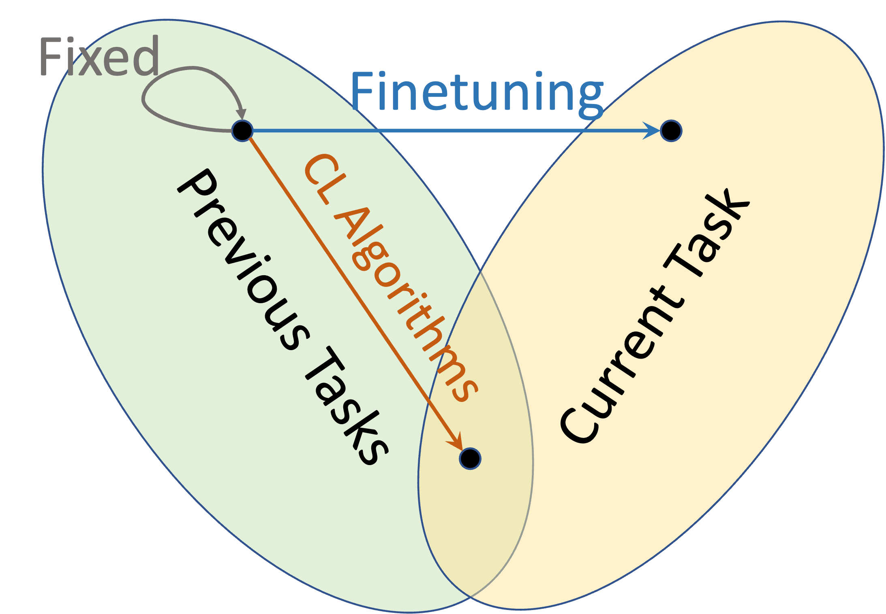
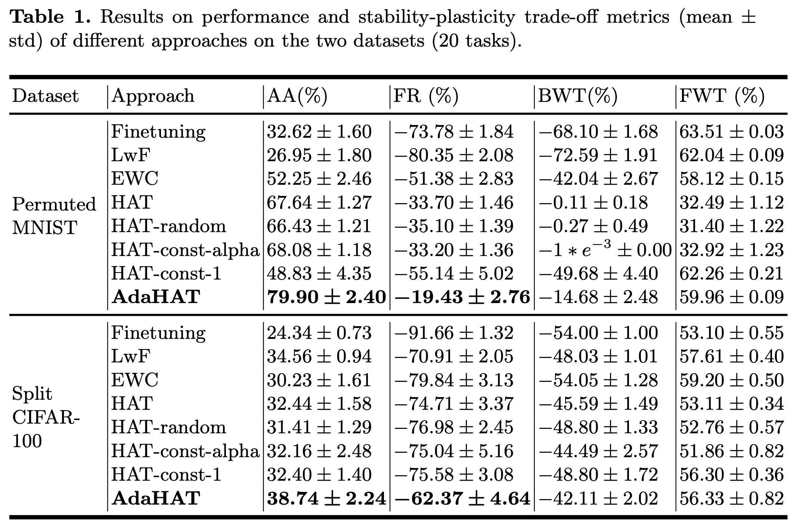

AdaHAT: Adaptive Hard Attention to the Task in Task-Incremental Learning
Introduction
Continual Learning
Continual Learning
- A machine learning paradigm
- Learn continual tasks and adapt over time
- One of the key features of human intelligence
Catastrophic Forgetting
- Drastic performance drops on previous tasks after learning new tasks
- A major issue for continual learning algorithm to address
Problem Definition
Continual Learning (CL): learning a sequence of tasks \(t=1,\cdots,N\) in order, with datasets \(D^t=\{x^t, y^t\}\)
Task-Incremental Learning (TIL): continual learning scenario, aim to train a model 𝑓 that performs well on all learned tasks
\[\max_𝑓 \sum_{t=1}^N \text{metric}(𝑓(x^t), y^t), \{x^t, y^t\} \in D^t\]
Key assumptions when training and testing task \(t\):
- No access to the whole data from previous tasks \(1,\cdots,t−1\)
- Testing on all seen tasks \(1,\cdots,t\)
- For TIL testing, task ID \(t\) of each test sample is known by the model
Existing Approaches for TIL
Replay-based Approaches
- Prevent forgetting by storing parts of the data from previous tasks
- Replay algorithms use them to consolidate previous knowledge
Regularization-based Approaches
- Add regularization terms constructed using information about previous tasks to the loss function when training new tasks
Architecture-based Approaches
- Dedicate network parameters in different parts of the network to different tasks (inherent nature of parameter separability)
- Keep the parameters learned in previous tasks from being significantly changed
- Focus on reducing representational overlap between tasks
Stability-Plasticity Dilemma
Continual learning is a trade-off between stability and plasticity.
- Stability: preserve knowledge for previous tasks
- Plasticity: reserve representational space for new tasks
We must trade them off to get higher performance averaged on all tasks.

For replay, regularization approaches:
- Emphasis on stability in their forgetting prevention mechanisms
- But generally still lean towards plasticity
For architecture approaches:
- Distinctly different strategies that overly prioritize stability
- Tilting the trade-off towards stability instead
Methodology
AdaHAT: Adaptive Hard Attention to the Task
Our Proposed AdaHAT soft-clips gradients, which allows minor updates for parameters masked by previous tasks:
\[g'_{l,ij}=a^\star_{l,ij} \cdot g_{l,ij}, \ a^\star_{l,ij} \in [0, 1]\]
The adjustment rate \(a^\star_{l,ij}\) now is an adaptive controller, guided by two pieces of information about previous tasks directly from HAT architecture:
- Parameter Importance
- Network Sparsity
AdaHAT: Parameter Importance
The attention vectors (masks) indicate the importance of parameter.
Cumulative Attention Vectors (HAT)
\[\textbf{m}^{\le t}_l = \max\left(\textbf{m}^t_l, \textbf{m}^{\leq t-1}_l\right)\]
- Binary \(\{0, 1\}\), represents if it’s masked by previous tasks
Summative Attention Vectors (AdaHAT)
\[\textbf{m}^{\leq t,\text{sum}}_l = \textbf{m}^t_l + \textbf{m}^{\leq t-1, \text{sum}}_l\]
- Range from \(0\) to \(t-1\), represents how many previous tasks it’s masked
- Encapsulates more information about previous tasks
Adaptive process: Higher summative vectors More important to previous tasks Smaller adjustment rate \(a^\star_{l,ij}\) Smaller updates for the parameter
AdaHAT: Network Sparsity
The sparsity regularization term \(R\left(\textsf{M}^t,\textsf{M}^{<t}\right)\) measures the compactness of masks.
It is closely related to the current network capacity:
Generally, when a smaller proportion of parameters in the network are static (i.e., sufficient network capacity), the regularization value tends to be larger, as there is a great possibility for the hard attention to be paid to active parameters.
Adaptive process: Higher sparsity regularization (Suggesting) more unmasked space available for new tasks Less need to adjust the static space for previous tasks, should go for active parameters Smaller adjustment rate \(a^\star_{l,ij}\) in general
AdaHAT: The Adjustment Rate
Adaptive Adjustment Rate (AdaHAT)
\[ a^\star_{l,ij} = \frac{r_l}{\min\left(m^{< t, \text{sum}}_{l,i},m^{< t, \text{sum}}_{l-1,j}\right)+r_l},\ r_l = \frac{\alpha}{R\left(\textsf{M}^t,\textsf{M}^{<t}\right) + \epsilon}\]
Adjustment Rate (HAT)
\[a_{l,ij} = 1-\min\left(m^{< t}_{l,i},m^{< t}_{l-1,j}\right) \]
The adjustment rate in AdaHAT adaptively incorporates both information about previous tasks:
- The higher parameter importance \(\min\left(m^{< t, \text{sum}}_{l,i},m^{< t, \text{sum}}_{l-1,j}\right)\), the lower adjustment rate
- The higher network sparsity \(R\left(\textsf{M}^t,\textsf{M}^{<t}\right)\), the higher adjustment rate
While in HAT only the accumulation of masks.
AdaHAT: Adaptive Hard Attention to the Task
Experiments
Main Results

Main Results
- Datasets: Permuted MNIST, Split CIFAR-100, 20 tasks
- Main metrics:
- Average Accuracy (AA) over all tasks
- Forgetting Rate (FR)
- Metrics for stability-plasticity trade-off:
- Backward Transfer (BMT) for stability
- Forward Transfer (FWT) for plasticity
Results:
- AdaHAT outperforms all baselines
- AdaHAT balances stability-plasticity better, while
- HAT: high BWT, low FWT
- Finetuning: low BWT, high FWT
- HAT-const-1: low BWT, high FWT
Conclusions: it is important to maintain a balanced stability-plasticity trade-off for optimal performance.
Results on Longer Task Sequences
Dataset: Permuted MNIST, 50 tasks (longer)
Results:
- HAT slightly outperforms before task 8 then drastically drops
- AdaHAT keeps significant superiority after the turning point
- AdaHAT is still close to HAT before task 8
Conclusions:
- There is a turning point for HAT when it exhausts network capacity
- AdaHAT mimics HAT well before the network capacity limit, and shows much more capability for long task sequence settings
Network Capacity Usage
Network Capacity Measurement
\[NC = \frac{1}{\sum_{l} N_l}\sum_{l,i,j} a_{l,ij}\]
0 = all parameters can be updated freely
1 = no parameter can be updated
Results and Conclusions:
- HAT runs out of network capacity very soon at a fixed turning point (task 8)
- AdaHAT again behaves very similarly to HAT at first
- After the turning point, it manages it adaptively over time (through an adaptive adjustment rate), make it converge to 0 but never reach 0
Ablation Study
Ablation of two pieces of information:
- AdaHAT-no-sum: fix summative \(\min\left(m^{< t, \text{sum}}_{l,i},m^{< t, \text{sum}}_{l-1,j}\right)\) at constant \(t\)
- AdaHAT-no-reg: fix regularization term \(R\left(\textsf{M}^t,\textsf{M}^{<t}\right)\) at constant 0
Results: both underperform AdaHAT but outperform HAT
Conclusions: both information (parameter importance, network sparsity) play crucial roles for an adaptive extension of HAT.
Hyperparameters
AdaHAT introduces only one additional hyperparameter:
\(\alpha\) – overall intensity of gradient adjustment
Results: \(\alpha=10^{-6}\) is optimal.
Conclusions:
- Neither small nor large gradient adjustment balances the stability-plasticity trade-off, thus underperforms
- The optimal is still a relatively small value, indicating the importance to design a proper and well-guided adjustment rate
Conclusions
Conclusions
Existing architecture-based approaches (like HAT):
- Tend to tilt the stability-plasticity trade-off towards stability
- Suffer from insufficient network capacity problem in long sequence of tasks
Our proposed AdaHAT:
- Balances the trade-off in an adaptive adjustment mechanism
- Also retains maximum stability benefits before the network capacity limit
- Effectively leverages information about previous tasks which was seldom used in architecture-based approaches
- All of them leads to better performance than HAT
Future work:
- Explore and exploit more subtle information about previous tasks
Thank You
Thank you for your attention!
Please feel free to ask any questions or reach out to us at: